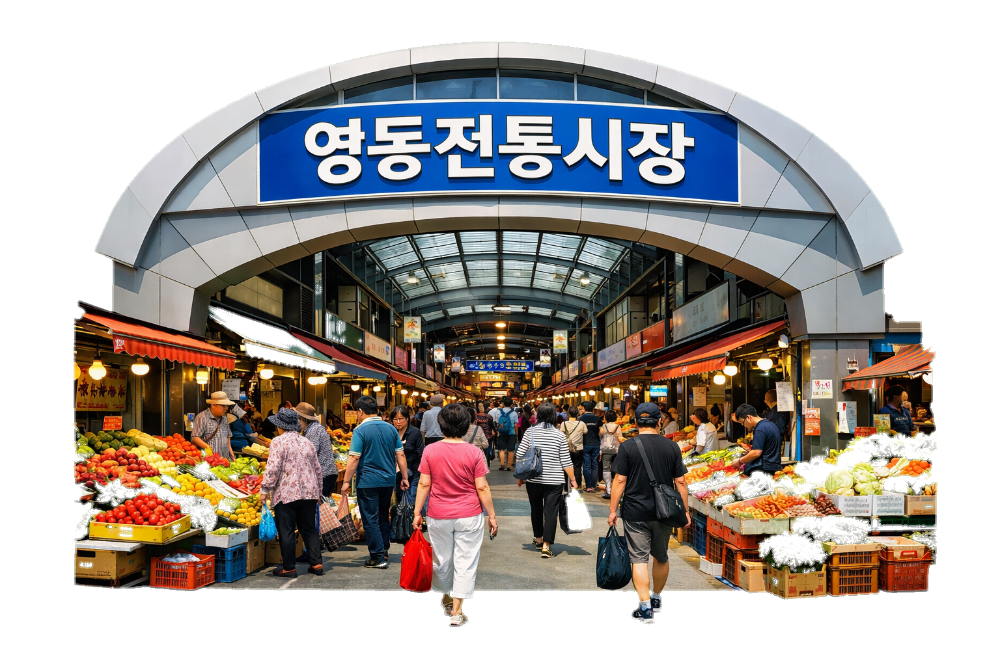

영동전통시장 완전 정복 가이드:
강남구 골목의 맛과 즐길 거리
강남구 논현동 한복판에 자리한 영동전통시장의 족발·곱창·떡볶이 맛집, 지하철 접근성, 퇴근길 야시장 분위기 이용 팁을 정리했습니다.

1. 강남대로 이면에서 만나는 반전의 정겨운 시장
고층 빌딩과 화려한 카페가 즐비한 강남구 논현동 한가운데에는 1970년대 영동지구 개발과 함께 주민들의 장터로 자리 잡은 '영동전통시장'이 있습니다. 강남 한복판에 전통시장이 있다는 사실에 처음 방문하는 분들은 놀라곤 하지만, 한 발만 들어서면 훈훈한 인심과 고소한 음식 냄새가 강북의 유서 깊은 시장 못지않게 진하게 피어납니다.
특히 낮에는 1인 가구와 주변 주민들을 위한 반찬·과일·정육 가게들이 바쁘게 돌아가고, 해가 지면 논현동과 강남역 일대 직장인들이 몰려드는 활기찬 먹자골목으로 분위기가 180도 바뀝니다.
2. 주머니 사정 가벼운 강남 직장인들의 소울푸드 골목
강남의 높은 물가 속에서 영동전통시장은 가성비 좋은 저녁 한 끼와 회식을 즐길 수 있는 귀한 공간입니다. 윤기가 좌르르 흐르는 왕족발과 쫀득한 족발 꼬리, 철판 위에서 지글지글 볶아내는 야채곱창과 떡볶이, 갓 부쳐낸 바삭한 모둠전까지 다양한 안주와 간식을 부담 없는 가격에 맛볼 수 있습니다.
점심시간에는 뚝배기에 펄펄 끓여 나오는 한우 곰탕, 설렁탕, 손칼국수 집마다 직장인들의 긴 줄이 늘어서며, 포장해 집으로 가져가는 닭강정과 수제 반찬 가게도 인기가 높습니다.
3. 접근성 최고의 강남 저녁 산책 코스
신분당선과 7호선, 9호선이 모두 지나는 논현역·신논현역 도보 5분 거리에 있어 대중교통 접근성이 서울 시장 중 손꼽힐 정도로 좋습니다. 가로수길이나 신논현역 쇼핑 후 색다른 저녁 식사를 원한다면 빌딩 사이 골목으로 들어와 영동전통시장의 활기찬 밤 공기를 느껴보세요.
한눈에 보는 방문 핵심 정보
| 위치 · 지하철 | 서울 강남구 강남대로128길 20 · 논현역 2번 출구 / 신논현역 3번 출구 |
|---|---|
| 영업시간 | 상점 09:00 ~ 21:00 / 먹자골목·주점 16:00 ~ 24:00 (점포별 상이) |
| 정기 휴무 | 연중무휴 (개별 점포 일요일 휴무 다수) |
| 대표 먹거리 | 왕족발, 즉석 철판 떡볶이·순대, 매콤한 닭강정, 곰탕·보쌈·파전 |
| 이용 팁 | 강남역·신논현역 인근 대비 합리적 가격대, 온누리상품권·제로페이 사용 가능 |
강남 영동전통시장 퇴근길 추천 코스
- 오후 5시 30분 · 논현역 2번 출구 출발: 시장 초입을 걸으며 김이 모락모락 나는 어묵과 떡볶이, 닭강정 간식을 구경합니다.
- 오후 6시 30분 · 족발·보쌈 또는 노포 전집 식사: 시장 안쪽 먹자골목에서 따뜻한 족발이나 모둠전으로 여유로운 저녁 식사를 즐깁니다.
- 오후 8시 30분 · 가로수길 또는 강남대로 야간 산책: 시장에서 나와 도보 이동이 가능한 신사동 가로수길 카페나 반포 한강지구 방향으로 이동합니다.
자주 묻는 질문 (FAQ)
Q. 강남에 있는 시장이라 가격이 비싸지 않나요?
강남 일반 식당가와 비교해 훨씬 저렴한 서민 물가를 유지하고 있습니다. 특히 온누리상품권을 사용하면 추가로 10% 절약할 수 있습니다.
Q. 저녁 늦게 가도 문을 연 가게가 많나요?
네, 먹거리 식당과 포장마차 분위기 술집들은 저녁 6시부터 밤 11시~자정까지 가장 붐비며 늦게까지 영업합니다.